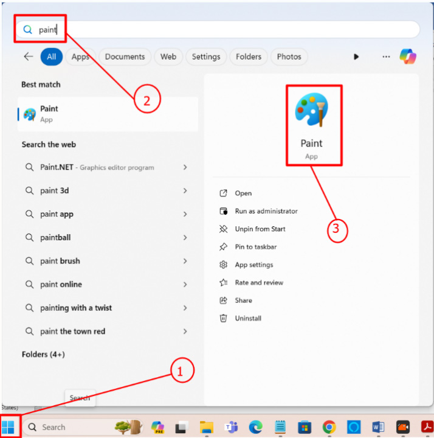

Kazi ya kufanya namba 2
Tazama Kielelezo namba 2 na utaje maumbo matatu yanayofuata katika mfuatano.
Kuunda na kupanga maumbo kimantiki
Kuna programu mbalimbali za kompyuta zinazotumika kuchora maumbo. Katika sehemu hii, utatumia programu inayoitwa Paint kuchora maumbo tofauti na kuyapanga kwa mantiki.
Kufungua program ya paint
Hatua za kufungua programu ya Paint kwa kutumia Windows 11 zinaonyeshwa kwenye Kielelezo namba 3. Mahali pa upau wa utafutaji inaweza kutofautiana kidogo katika matoleo mengine ya Windows.
Hatua
1.
Bofya kwenye kitufe cha ‘Windows Start’ kama inavyoonesha katika Kielelezo namba 3.
2.
Andika ‘Paint’ katika upau wa utafutaji.
3.
Bofya ‘Paint’.
